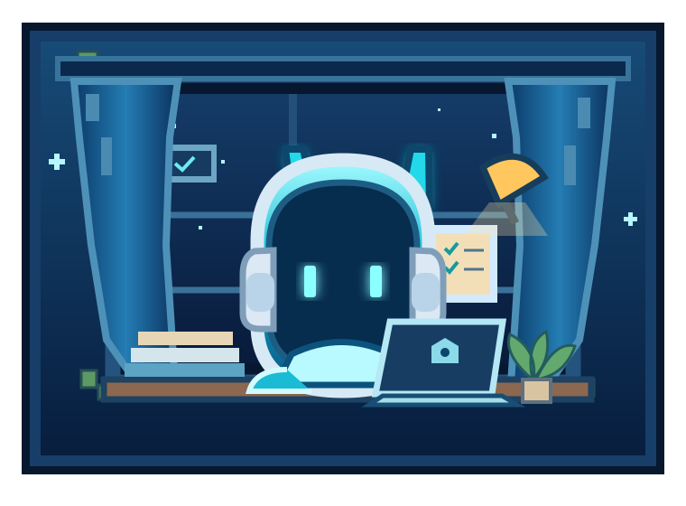

Task & Reminder
Keep your tasks, notes, and little reminders in one place.

balBul helps you stay on track — reminding you of tasks, little notes, and daily goals right on your desktop. A tiny companion to make your day feel a little lighter.
A simple yet powerful companion to keep you productive, focused, and connected.
Keep your tasks, notes, and little reminders in one place.
A friendly companion that's always with you on your desktop.
Add friends, share tasks, and work toward goals together.
Stay connected with your friends, anytime with realtime chat.
See your progress, completed tasks, and daily activity.
Get started in a few simple steps.
Sign up with your email, verify your account, and get your own Friend ID.
Download the balBul installer for Windows and run the setup.
Open the app, log in with your account, and your data will sync.
Add friends using Friend ID, chat, and share tasks together.
Install balBul in a few clicks and meet your new desktop assistant.
↓ Download balBul (EXE)